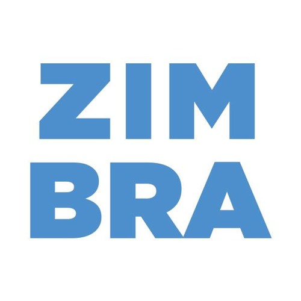

Banda Zimbra


O garoto Pedro do Espirito Santo Sampaio, vulgo artistico Pedro Sampaio tem o total de 02 albuns. Aos 13 anos de idade, começou a descobrir seu talento para a percussão tocando em um balde e, em seguida, convenceu seu pai a comprar um tantã, repinique, timbal e pandeiro. Um ano depois, foi descoberto por Victor Junior quando tocava como DJ em uma festa da amiga do pai. Começou a se dedicar mais até chegar aos 17 anos, quando definitivamente entrou para o time de artistas do Dennis DJ.
Alguns de seus Albuns:
Imagine Dragons é uma banda de pop rock formada em Las Vegas nos Estados Unidos, consistindo do vocalista Dan Reynolds, do guitarrista Wayne Sermon, do baixista Ben McKee e do baterista Daniel Platzman
Possuem mais de 5 anos de carreira possuindo ao todo 12. Eles tem Origem de LAS VEGAS, Nevada dos Estados Unidos. Seus gêneros são POP, ElectroPop, Indie Pop e PopRock.
Alguns de seus Albuns:
Gustavo Pereira Marques (Belo Horizonte, 4 de junho de 1994), mais conhecido pelo nome artístico Djonga, é um rapper, escritor e compositor brasileiro. Considerado um dos nomes mais influentes do rap na atualidade
Ele possui mais de 5 anos de carreira possuindo ao todo 12 anos e mais de 3 albúns que impactou a vida de muitos jovens brasileiros e periféricos. Nascido na Favela do Índio, em Belo Horizonte,[2] Djonga foi criado nas ruas dos bairros São Lucas e Santa Efigênia, na Região Leste da capital mineira. Sua avó Maria Eni Viana é tida como uma grande referência em sua vida
Alguns de seus Albuns: